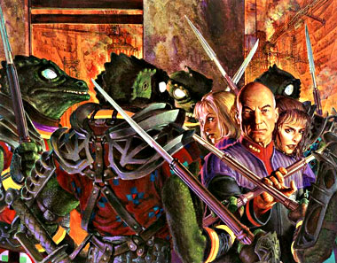
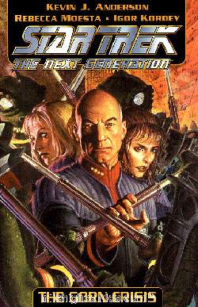
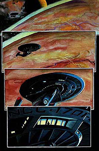

|


Star
Trek TNG: The Gorn Crisis
Mais esforços
de A Nova Geração na Guerra Dominion

|
 Se voc um bom trekkie, voc j deve ter se perguntado o que diabos o capito Picard e a tripulao da Enterprise-E estava fazendo durante a Guerra Dominion. Em que lugar estava a Enterprise enquanto Sisko e a Defiant enfrentava as frotas dos Dominion em episdios de Deep Space Nine como "Call to Arms", "Sacrifice of Angels" e o super-mega episodio final "What You Leave Behind"? Por que Picard no mencionado e no se v uma apario da Enterprise-E ou uma outra nave Classe Sovereign? Para dizer a verdade, eu, que no sou trekkie, j me perguntei isso vrias vezes ao assistir tais episdios. Ento imagina voc, que trekkie, ento!
 A Pocket Books publicou vrios livros sobre a Enterprise-E na guerra, como a mini-srie "Dominion Wars" de John Vornholt e "Battle for Betazed" de Susan Kearney e Charlotte Douglas. Mas foi nos quadrinhos, numa Graphic Novel da Wildstorm/DC, que foi contado o melhor relato das aventuras de Jean-Luc Picard e sua tripulao durante a guerra. Em 2000 foi publicado "The Gorn Crisis", uma graphic novel de capa dura com 96 páginas e a sensacional arte pintada de Igor Kordey, com historia de Kevin J. Anderson e Rebecca Moesta, famosos entre os fs de fico cientfica por seus livros de "Star Wars". Voc se lembra dos Gorns, no? Aqueles aliengenas meio-rpteis, meio humanos, que fizeram primeiro contato com a Federao (e quebraram o pau com o capito James T. Kirk) no bom episdio do primeiro ano da Srie Clssica chamado "Arena", e depois (ou antes, dependendo de como se analisa a cronologia) no alternativo "In a Mirror, Darkly" de Enterprise, quando outro Gorn foi subjulgado pelo Archer do mal. Pois so estes mesmos Gorns que o capito Picard vai em uma misso desesperada pedir uma aliana na guerra contra o Dominion. Com a Federao perdendo naves e planetas para seu inimigo mortal, aliados assim seriam vitais para a vitria. Infelizmente, a situao no mundo natal dos Gorns no poderia ser pior. O governo acabara de sofrer uma insurreio liderada pelos Black Crest, uma linhagem de agressivos guerreiros que acreditam que a derrota de seu lder por Kirk h um sculo atrs marcou o declnio da civilizao Gorn.  Se voc tem bom ingls e sabe como garimpar quadrinhos de Star Trek em sites como a Amazon.com, Mile High Comics e o eBay, ento pode preparar seu carto de credito, pois essa aquisio eu recomendo. Afinal de contas no preciso ser trekkie para apreciar a boa histria e a boa arte de "The Gorn Crisis" (mas sendo justo, ser trekkie tambm no atrapalha). Ficha tcnica "Star Trek The Next
Generation: The Gorn Crisis" Na internet: Mile High Comics, Amazon.com |
 Quando
Picard e seu grupo avanado se transporta para a cmara do conselho, apenas para
achar todos os seus lideres assassinados, so capturados pelo lder dos Black
Crest chamado Sleeeeesh. Cabe a Data, no comando da Enterprise-E, decidir agir
com diplomacia ou fora contra o novo regime Gorn. Se ele falhar, a Federao
no ter apenas uma guerra nas mos, mas duas. Enquanto isso, o Nmero Um de Picard,
Riker, serve a bordo de uma nave Klingon em um esforo de acompanhar o comandante
Klingon Qyrll para o posto avanado da Federao em Elkauron II. Quando a frota
Gorn ataca os postos avanados da Federao, cabe a Riker e seus aliados klingons
impedirem a invaso alm da Zona Neutra. O que mais impressiona nesta graphic
novel (alm do texto dinmico e trato fino dos personagens por Anderson e Moesta,
coisa que faltou nos ltimos filmes de A Nova Gerao) a arte pintada
de Kordey, que lembra muito a do atual rei dos quadrinhos Alex Ross, pintor de
clssicos como "Marvels", "Kingdom Come" e atualmente,
Quando
Picard e seu grupo avanado se transporta para a cmara do conselho, apenas para
achar todos os seus lideres assassinados, so capturados pelo lder dos Black
Crest chamado Sleeeeesh. Cabe a Data, no comando da Enterprise-E, decidir agir
com diplomacia ou fora contra o novo regime Gorn. Se ele falhar, a Federao
no ter apenas uma guerra nas mos, mas duas. Enquanto isso, o Nmero Um de Picard,
Riker, serve a bordo de uma nave Klingon em um esforo de acompanhar o comandante
Klingon Qyrll para o posto avanado da Federao em Elkauron II. Quando a frota
Gorn ataca os postos avanados da Federao, cabe a Riker e seus aliados klingons
impedirem a invaso alm da Zona Neutra. O que mais impressiona nesta graphic
novel (alm do texto dinmico e trato fino dos personagens por Anderson e Moesta,
coisa que faltou nos ltimos filmes de A Nova Gerao) a arte pintada
de Kordey, que lembra muito a do atual rei dos quadrinhos Alex Ross, pintor de
clssicos como "Marvels", "Kingdom Come" e atualmente,